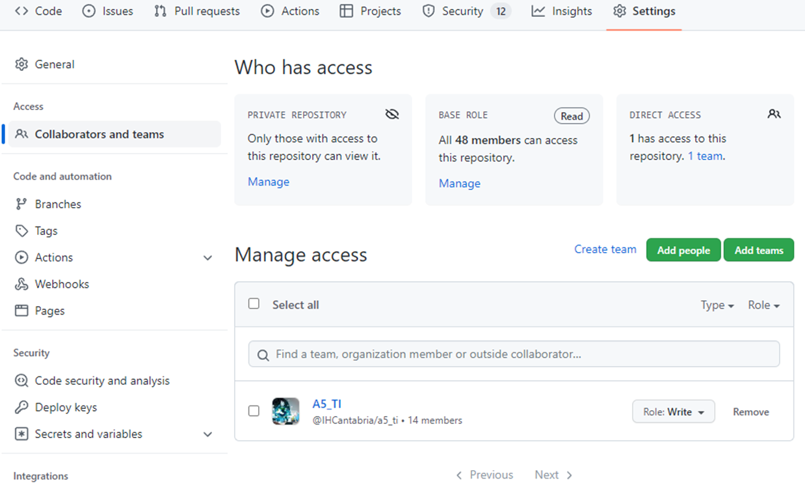
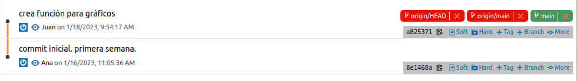
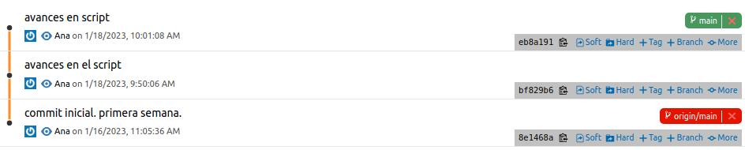
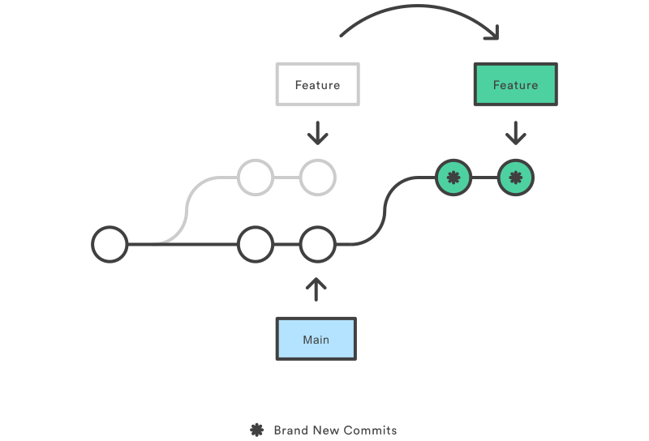
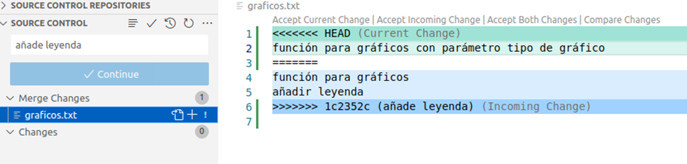
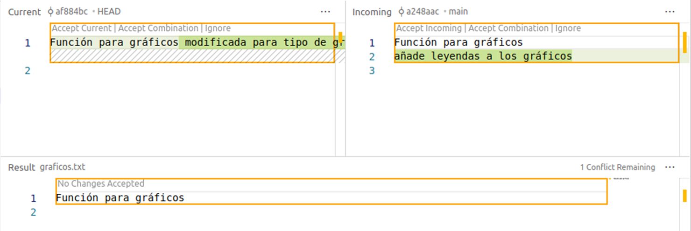

Trabajo en equipo
Cuando trabajamos en un repositorio con más gente nos podemos encontrar ciertos conflictos con el código subido al repositorio remoto.
A través de unos ejemplos vamos a ver las situaciones que se pueden dar cuando trabajamos en equipo:
Trabajan con diferentes ficheros, por lo cual es fácil resolver los conflictos.
Trabajan modificando ficheros en común, hay que resolver manualmente los conflictos.
Dar permisos en GitHub
Por defecto, cuando hagamos un repositorio en GitHub todos los usuarios de la organización tendrán derechos de lectura pero no de escritura. Desde Settings del proyecto, Collaborations and teams podremos añadir tanto grupos completos o personas que no tienen por qué pertenecer a nuestra organización con derechos de escritura o superiores.

Caso de ejemplo
Tenemos a dos desarrolladores que llamaremos Ana y Juan que van a programar un operacional. Cada semana se les asignarán ciertas tareas:
Semana 1
Ana
Crea la carpeta del proyecto con los ficheros iniciales (
README.md,.gitignore, etc.).Inicializa el repositorio y lo sube a github (
init&remote add origin url).Desarrolla script para ejecución del operacional. Guarda cambios (
commit).Subir cambios al repositorio (
push -u origin master).
En este caso no hay conflictos, Ana ha trabajado de manera individual.
Semana 2
Ana
Continúa con el script de ejecución.
Guarda los cambios varias veces a la semana (
commit).El viernes sube los datos al repositorio (
push).
Juan
Descarga el repositorio (
clone).Desarrolla módulo para gráficos.
Guarda los datos el miércoles (
commit) y lo sube (push).
En este caso, Ana va a recibir un mensaje de error cuando intente realizar el push.


Como podemos ver, en la historia ambos parten de un commit (8e1468a) pero luego cada uno tiene sus propios commits.
Cuando Ana intenta subir sus cambios, el repositorio remoto tiene el commit de Juan y no sabe cómo introducir los nuevos cambios, pues no existe una continuidad en los commit.
La solución es descargarse los cambios a un branch e introducirlo en su historia. Para ello usaremos los siguientes comandos:
git fetchpara descargar los ficheros, quedarán en unbranchllamadoorigin/main.git rebase origin/mainpara aplanar los commits.

Rebase tomará los commits del branch y los colocará tras el commit en común, a continuación modificará los commits nuestros para que sean a partir del nuevo commit. Ahora ya podrá subir los datos con push pues los nuevos commits son a partir de los que ya existen en el repositorio.
Semana 3
Ana
Comprueba que no haya novedades en GitHub (
pull).Más avances en el script
Añade leyenda en las gráficas.
Guarda los datos entre semana y el viernes sube los datos al repositorio (
push).
Juan
Actualiza el repositorio (
pull).Nuevo módulo para informes.
Modifica las gráficas para disponer de más tipo de gráfico.
Guarda los datos el miércoles (
commit) y lo sube (push).
Al igual que en la seman anterior, Ana encontrará problemas para subir sus cambios por el mismo motivo.
En este caso, tras el git fetch, el git rebase no tendrá éxito porque hay un fichero en común que se modifica por lo que el usuario deberá especificar qué cambios deben quedar, si los de Juan (Current Change) o los de Ana (Incoming Change), o bien ambos o un nuevo código.
Herramientas visuales ayudan mucho a hacer este trabajo, pues desde un editor de texto sin mejoras es bastante farragoso. VSCode incluye algunas visualizaciones que nos ayudarán mucho:


Una vez guardado el fichero final, añadiremos un mensaje y ya podremos subir los cambios al repositorio remoto.